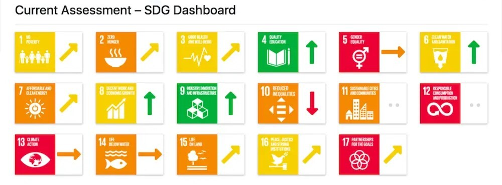

図1.日本のSDGs達成率
赤は「最大の課題」、オレンジは「重要課題」、黄色は「課題が残っている」、 緑は「達成できている」。進捗を示す矢印は、
↑は「達成に向けて進んでいる」、↓は「後退」、→は「停滞」、↗︎は「適度に改善」を意味する ※サイトから引用
日本の進捗への評価に大きな変化はないが、18位という順位自体は2016年に並び
最も低い。
引き続き日本の最大の課題は、目標5(ジェンダー平等を実現しよう)、
目標13(気候変動に具体的な対策を)、目標14(海の豊かさを守ろう)、目標15(陸の
豊かさも守ろう)、目標17(パートナーシップで目標を達成しよう)。進捗が後退し
ているのは目標15。
ただし、今回は目標10 (人や国の不平等をなくそう)と目標12
(つくる責任 つかう責任)の進捗を測るデータが不足し、国内でも注目の集まる肝
心な課題への取り組みの進捗が不明となっている。